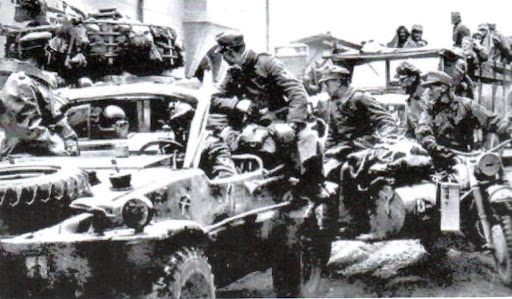

A San Martino di Lupari, vicino via Vittorio Emanuele II°, il 29 aprile 1945, il battaglione Falk, con il suo seguito di ostaggi, si incolonna verso Nord. I partigiani continuarono a pattugliare la strada che da San Martino porta a Soranza. A Castelfranco molte SS ancora attive cercavano di far passare la Falk, in modo che non potesse essere separata dal resto dell’esercito. Nella zona di Sant’Andrea altri gruppi di partigiani cercano di liberare Castelfranco. I tedeschi li attaccano e avvengono sparatorie a S.Andrea, fino in Via Vittorio Emanuele.
La divisione tedesca scappa da San Martino di Lupari